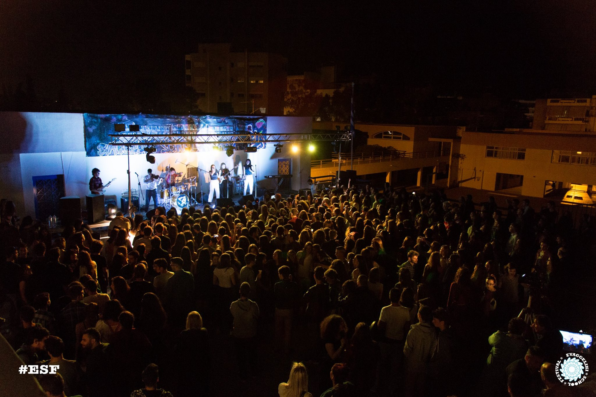
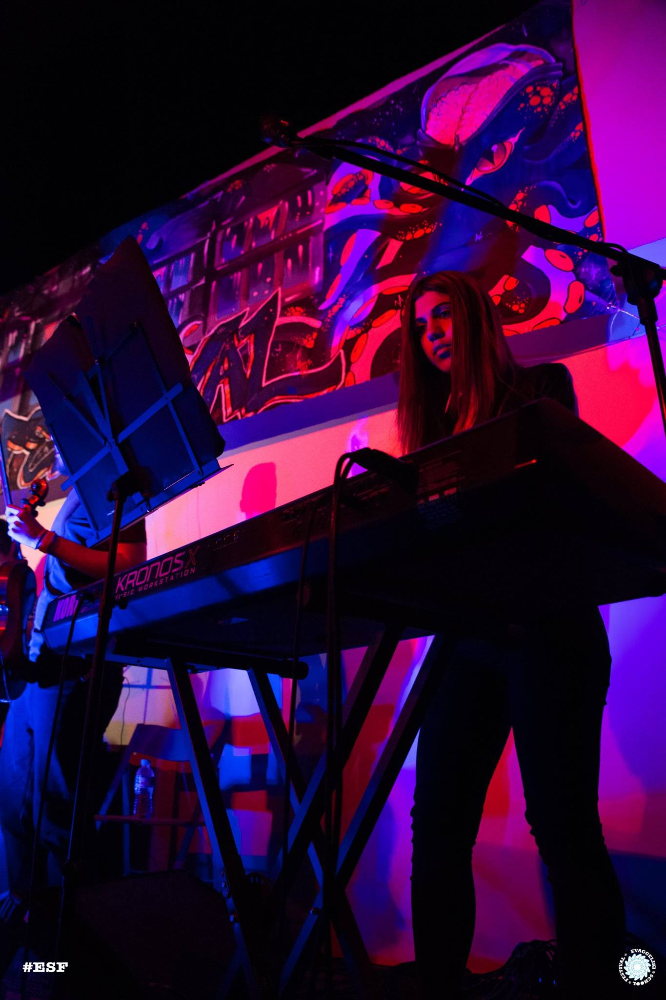
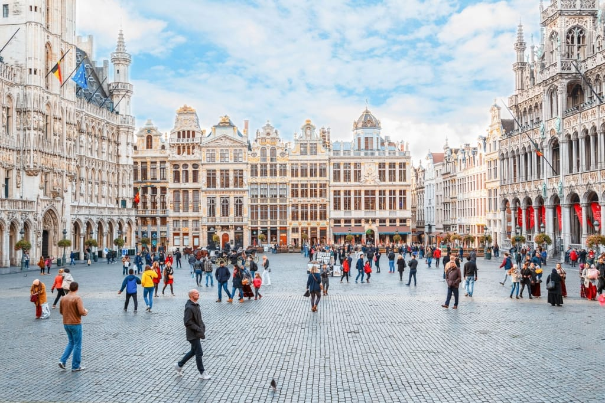
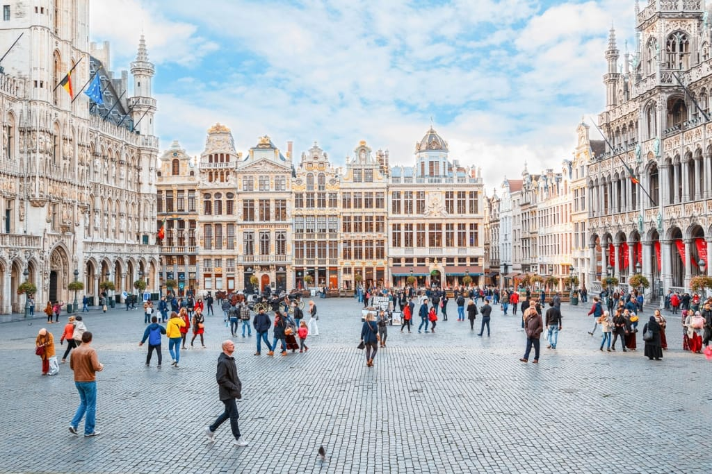

Interests
Myrto is a very active person who likes living intensely and trying new things all the time. However, her favourite hobbies are Music and Travelling!
Music
Myrto has been playing the piano since the age of 7. In 2019 she got a degree in classical piano, by the Hellenic Conservatory of Music and Arts. However, she also plays piano keyboards, which help her to play more modern music. In addition, she has taken part in concerts and music festivals, like the Evaggeliki School Festival, one of the most popular school festivals in Athens.
Here are some snapshots of her participation in 2016.
Video of Evaggeliki School Festival 2016 
Finally, she has taken part in many other concerts with her band called “Travelers” and she has also worked a lot of times as a musician.
Travelling
Travelling is one of the most important things in Myrto’s life.
She loves visiting new places and meeting different cultures and people.
Her dream is to travel all over the world one day!
Take a look at some of her recent trips.
 
